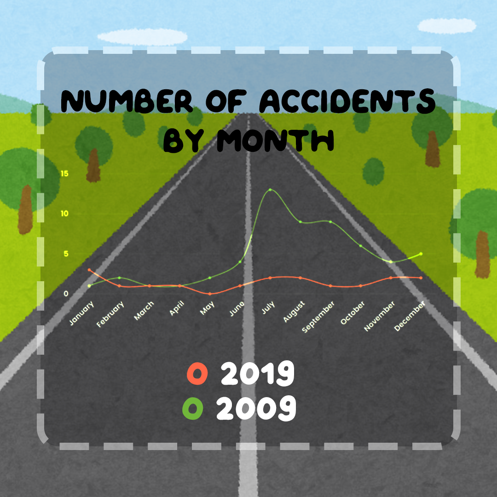
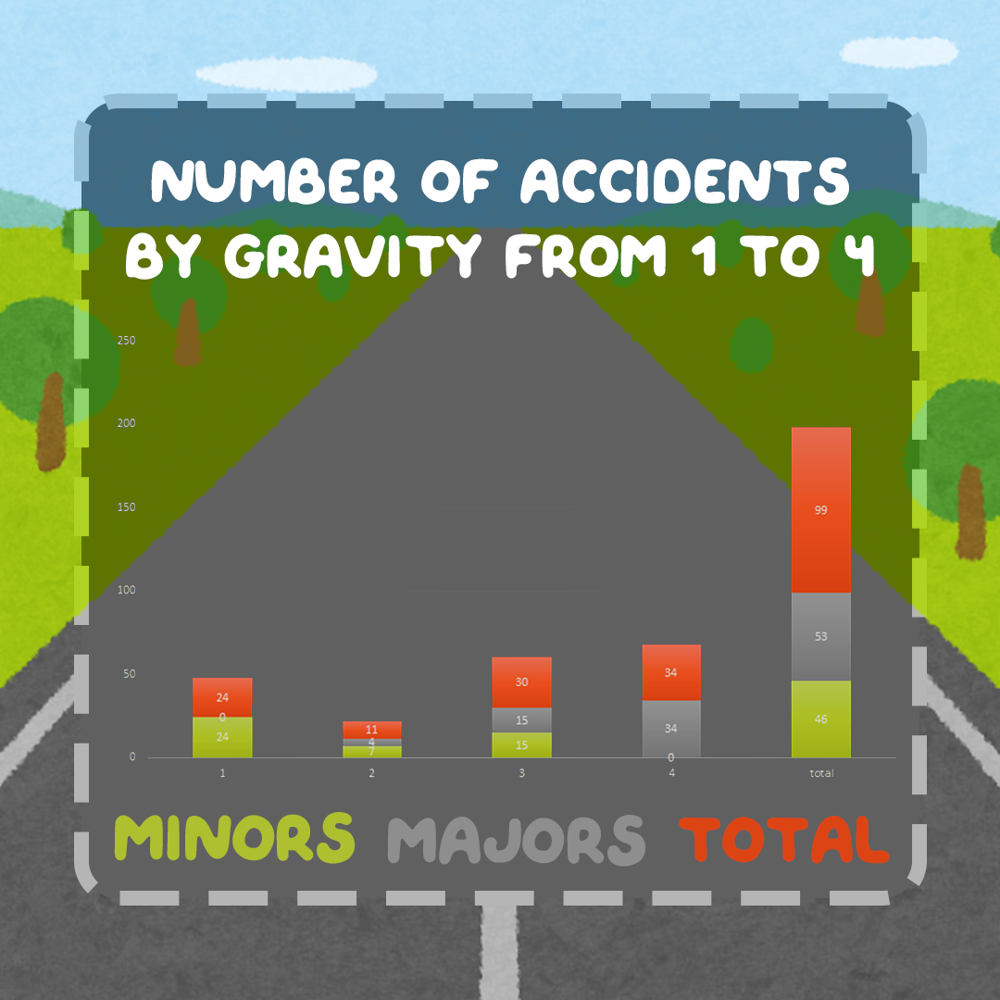
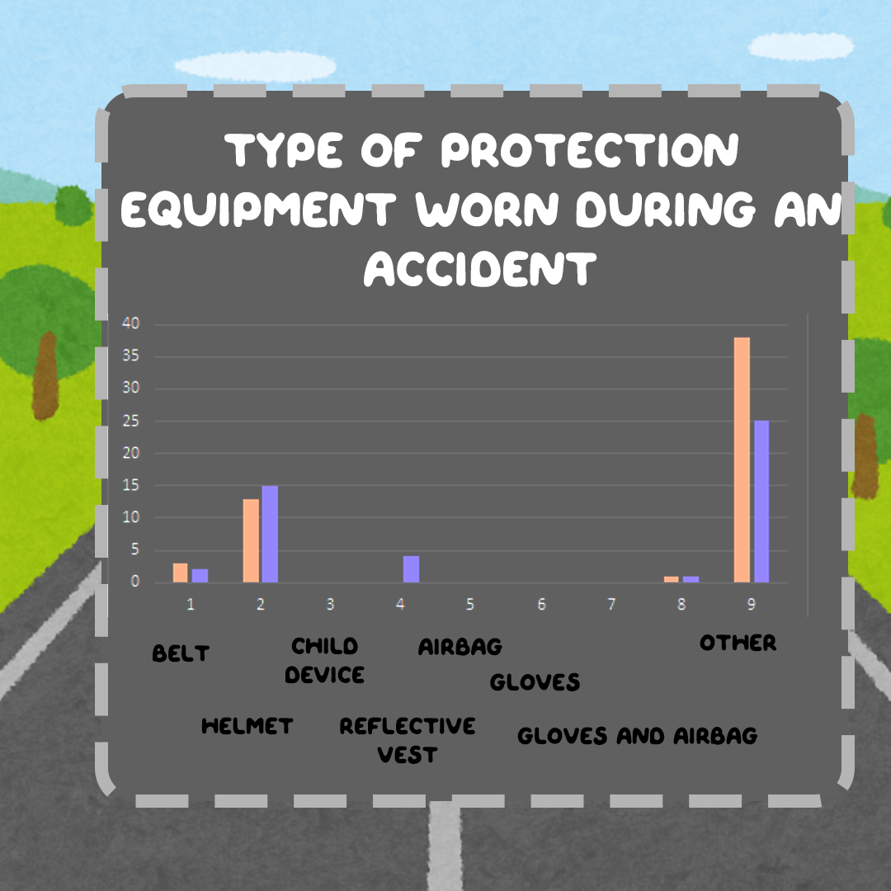

First, we can ask ourselfs, what exactly is this plan "Le plan vélo" is a government initiative which started in september of 2019 and aimed at promoting and improving cycling infrastructure and practices France. It includes measures such as building bike lanes, providing bike-sharing programs, and creating policies to make cities more bike-friendly. The goal is to reduce traffic congestion, improve air quality, and encourage people to choose bicycles as a sustainable and healthy mode of transportation.
If we compare the number of accidents in 2009 and 2019, there is an impressive difference. Out 75 accidents, about 76% where in 2009 while that number drops down to 24% for 2019. But could this be a direct correlation between the begining of the security measures or could it just be a cohencidence? To answer that, let's take a deeper dive into the numbers.
The data shows that the 'Plan Vélo' has a impact on specific types of accidents. For instance, in 2009, about 15% of bicycle-vehicle collisions occurred in areas with dedicated cycling infrastructure, while 85% occurred in regions without such provisions showing the lack of.
Most of the time, minors tend to be in accident that are not as tragic as adults. Some reasons could be that there more carefull on the road since they know they could be not as easily noticed by other users such as cars, or trucks. Overall, they only make up for 34,48% of the total number of accidents on the road.
The 'Plan Vélo' in Indre-et-Loire is undeniably a step forward in enhancing bicycle safety. Local statistics and case studies illustrate a positive correlation between the initiative and reduced bicycle accidents. However, it is essential to consider regional disparities and the need for a comprehensive approach that encompasses infrastructure development, education, and user behavior. As France continues to invest in cycling infrastructure through the 'Plan Vélo,' ongoing research and data analysis will further refine strategies to ensure safer cycling on the department's roads. But of course let's not forget about user conciencness and let's stay safe on the road!